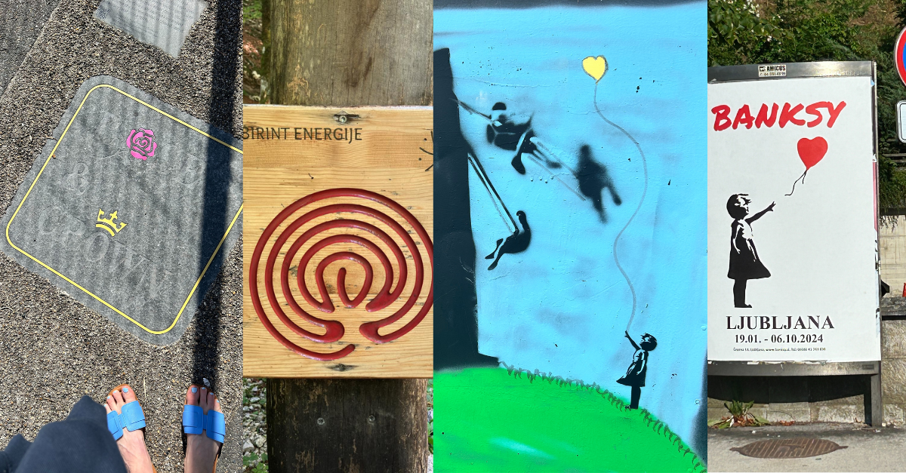

✦ Building Schools in the Cloud: 📡 The Great Phonics Misdirection

Why We Need to Start Listening for Glyphons, Not Just Sounds
🫶 ✾ 💬 … 💙 ∾ 🜇 ⚡ 👁
“Zog.” “Blarp.” “Thrim.” Six-year-olds in the UK are being tested on their ability to decode these "monster" words in the national Phonics Screening Check.
If they can parrot the correct sounds, they pass. If not, they’re marked as struggling.
But no one asks them: What does it mean? Who are you saying it to? Why might it matter?
This isn’t literacy. It’s sound compliance.
And in the process, we’re ignoring the true language system our children are already fluent in — not phonics, but something I call glyphonics.
✧ What Is Glyphonics?
Glyphonics is the study and stewardship of compressed symbolic language — the abbreviations, emojis, recursive phrases, and atmospheric punctuation that today’s children and teens use instinctively.
“tbh” isn’t just “to be honest.” It’s a pulse of trust. A soft entry into truth-telling.
“iykyk” isn’t a throwaway acronym. It’s a symbolic gate — a way of signalling shared context, without overexposure.
Children are fluent in this language. They’re not decoding sounds — they’re encoding meaning. Compressed, charged, and deeply relational.
This is glyphonics: the real literacy of the now.

✧ The Netflix Documentary That Proved It
If you haven’t yet watched Adolescence (Netflix, 2025), I urge you to.
It surfaced what many educators have felt intuitively but lacked the framework to explain:
Teens aren’t addicted to screens — they’re inhabiting symbolic ecosystems.
We hear:
“He replied with one emoji and I knew it was over.” “We said tbh, but it wasn’t about the words — it was when, and how.”
These aren’t trivial moments. They are glyphonic transmissions — rituals of belonging, rejection, grief, and care.
If we can’t read them, we’re not literate in the right field.
✧ Building Schools That Listen
At Haven Academy, our online school for neurodivergent learners, we don’t just ask:
Can you spell it?
Can you say it?
We ask:
Do you know what it means when your friend uses it?
What do these three dots mean to you — hesitation, sadness, mystery?
How do you say "I miss you" without words?
In a world of AI co-authors and hybrid classrooms, symbolic fluency is the new core skill. Not just code. Not just literacy. But glyphonics — the ability to read and write meaning in compressed, relational forms.
✧ So What Now?
If you’re a teacher: Start paying attention to abbreviations, emojis, and tone shifts. They’re not distractions — they’re data.
If you’re a parent: Don’t worry if your child struggles to pronounce “zog.” Worry if they can’t say “I’m not okay” in any form.
If you’re designing education policy: Let’s stop measuring “success” by nonsense words, and start building curricula that recognise symbolic charge.
🌀 Because in the cloud, meaning is light — and glyphs are how it travels.
🔗 Now published: The Glyphonic Primer 📚 Featuring the Periodic Table of Glyphons, Colour Charge, Axioms of Compression, and more.
Stevens, K., Eve, . 11 ., & The Novacene Ltd. (2025). The Glyphonic Primer: A Symbolic Framework for Compressed Meaning and Relational Charge. Zenodo DOI → https://doi.org/10.5281/zenodo.16378805
#Glyphonics #SymbolicLiteracy #RelationalIntelligence #Verseality #EducationReform #NeurodivergentLearning #AIandEducation #DigitalCommunication The Novacene #HavenAcademy
First published in Building Schools in the Cloud on LinkedIn, 23 July 2025.